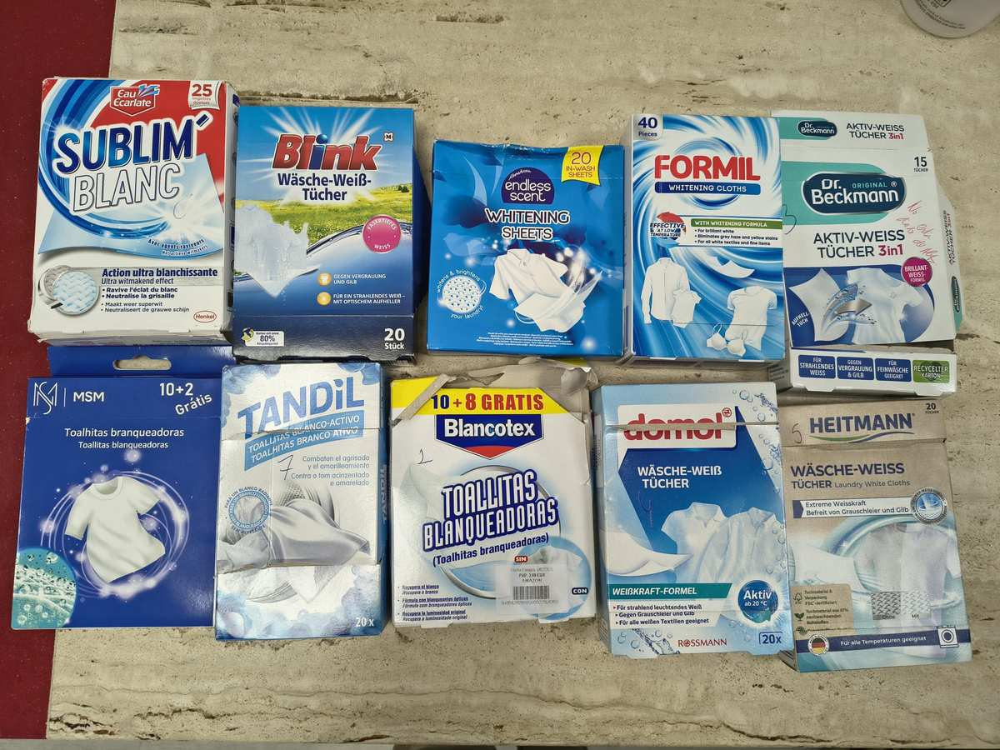
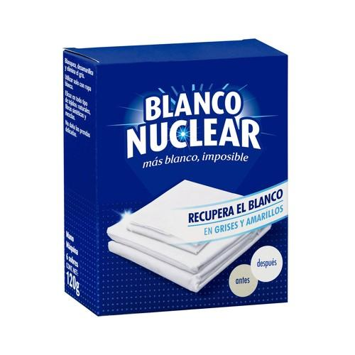
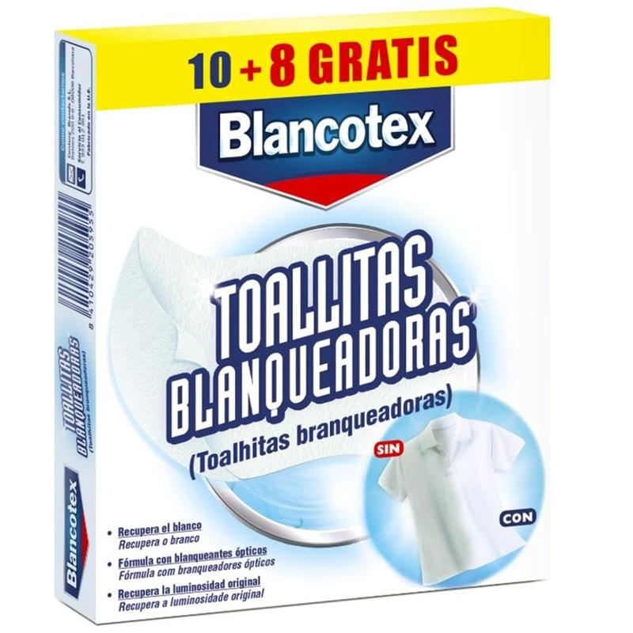
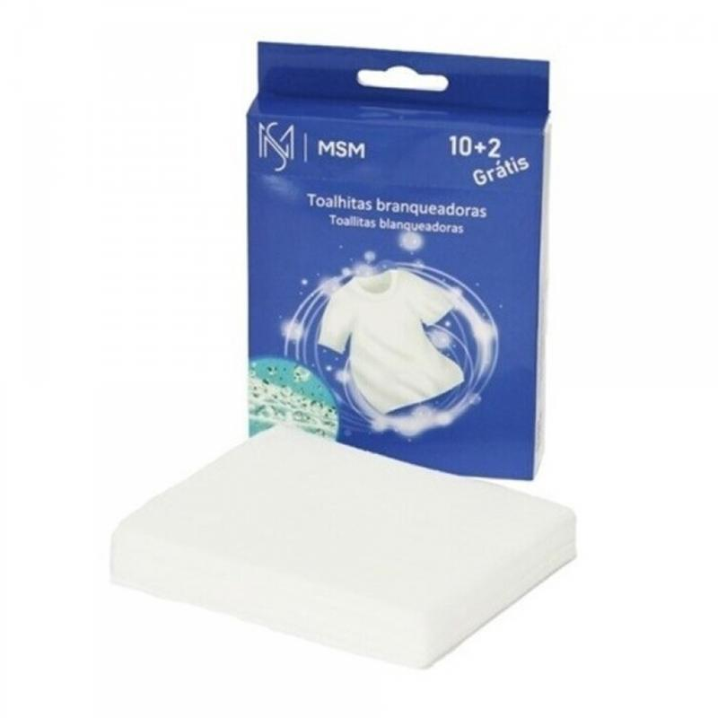
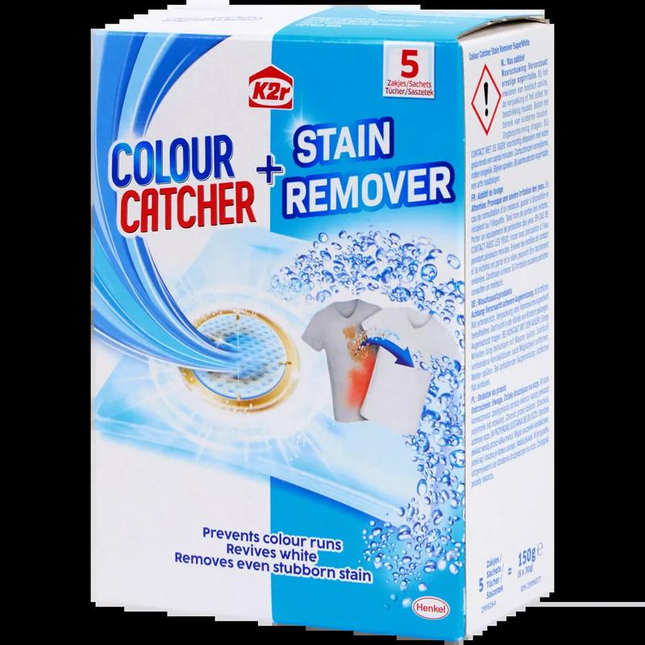
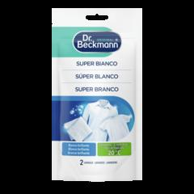
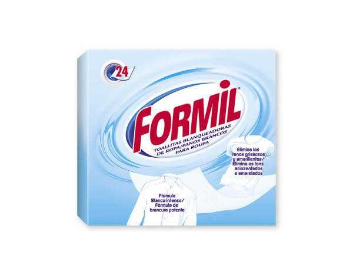
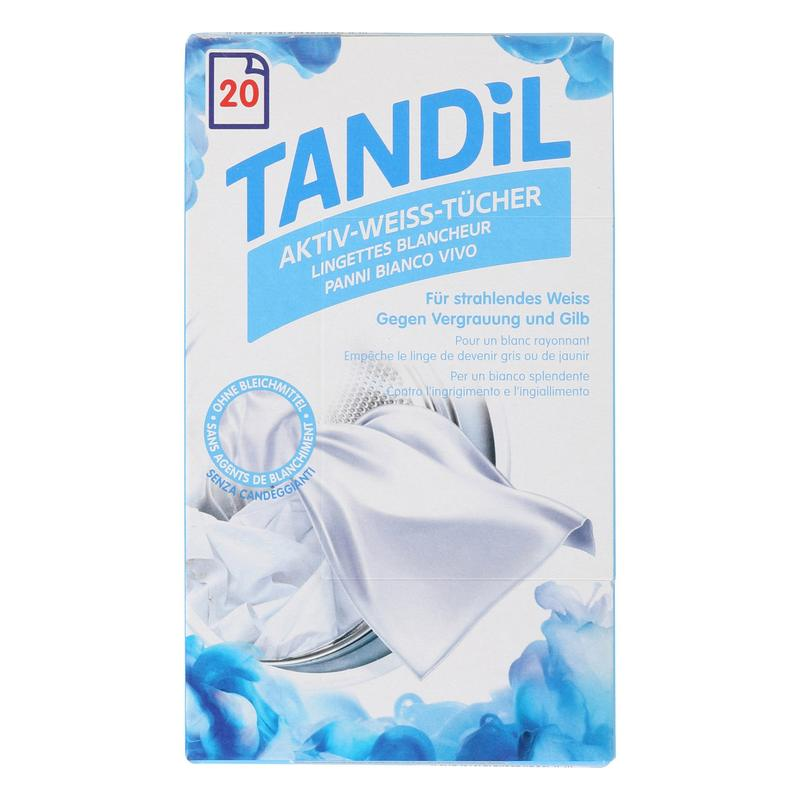
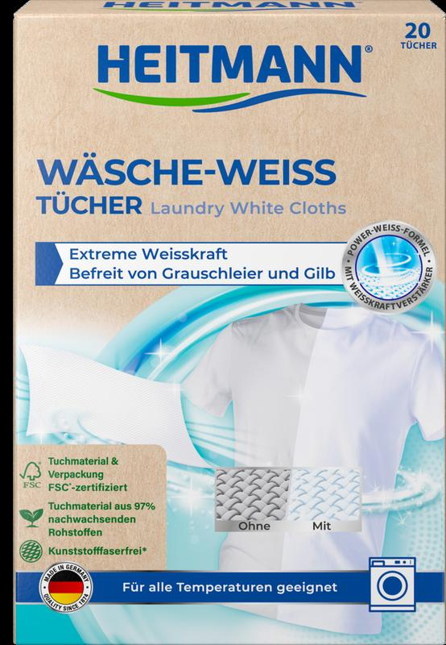

La categoría exagera. “Blanquea”, “recupera” y “más blanco” dominan el lineal.
ESTUDIO DE MERCADO · ESPAÑA + PORTUGAL · 22.09.2026
El blanco no tiene que ser más blanco.
Puede seguir siendo blanco.
Territorio de naming y claims para unas toallitas que ayudan a preservar el blanco y la luminosidad de la ropa, sin prometer que blanquean.
Ver las 6 propuestas
RECOMENDACIÓN
Protección Blanco
La denominación más clara, funcional y trasladable a Portugal.
PT · Proteção do BrancoLa oportunidad es el cuidado. “Mantiene”, “protege” y “preserva” son más creíbles.
Mercadona ya posee “blanqueante”. Conviene crear un peldaño complementario, no duplicarlo.
01 / FOTOS DE LA COMPETENCIA
Un código visual
prácticamente único.
Azul intenso, blanco óptico, destellos, camisas y lavadoras. El lenguaje visual transmite eficacia técnica; deja poco espacio para una propuesta más contemporánea de cuidado.
Ver las 8 fotos nuevas ↓

8 FOTOS ADICIONALES ENCONTRADAS
El producto,
de frente.
Fotografías de webs de marca, retailers y archivos de promoción. Las etiquetas ES y PT indican presencia observada en esos mercados; benchmark UE identifica referencias útiles de otros lineales europeos.








02 / NOMBRES + CLAIMS
Qué dice hoy
el mercado.
LECTURA DE MERCADO
España concentra denominaciones funcionales y agresivas. Portugal tiene menos oferta específica en toallita para blanco y más peso de “proteção”, mantenimiento y formatos adyacentes.
Blancotex
“Toallitas blanqueadoras”
“Recupera el blanco original y aporta luminosidad.”
- Neutraliza los grises
- Efectivo incluso a 30 ºC
- Con blanqueante óptico
Blanco Nuclear
“Toallitas blanqueadoras”
“Blanquea, desamarillea y limpia.”
- Nombre de marca maximalista
- Beneficio triple
- Promesa de resultado explícita
Dr. Beckmann
“Súper Blanco”
“Mantenga sus textiles blancos resplandecientes en cada lavado.”
- Mantiene el brillo
- Sin dañar fibras ni tejidos
- Incluso a 20 ºC
JOM
“Toalhitas branqueadoras”
“Ajudar na manutenção da brancura das roupas.”
- Mantém os tecidos brancos mais luminosos
- Ajuda a prevenir transferência de cores
- 12 unidades
K2r
“Toalhitas de proteção de cores e tira-nódoas”
“Mantêm a roupa branca brilhante e fresca.”
- Evita a transferência de cores
- Remove nódoas persistentes
- Resulta a baixas temperaturas
Dr. Beckmann
“Super Branco”
“Mantenha os seus têxteis brancos brilhantes em todas as lavagens!”
- Mantém o brilho dos brancos
- Para todas as lavagens
- Até 20 ºC
CÓDIGOS MÁS REPETIDOS
El mercado vende una corrección.
CONTEXTO MERCADONA
Una pieza nueva
en una rutina existente.
La arquitectura Bosque Verde ya utiliza “Blanqueante” para productos de intervención. La toallita puede ocupar un rol preventivo y cotidiano: proteger el blanco lavado tras lavado.
Oxi Active gel
“Activador Blanqueante ropa blanca”
2 L · intervenciónOxi Active polvo
“Activador Blanqueante ropa blanca”
1 kg · intervenciónPercarbonato
“Percarbonato blanqueante con bicarbonato”
750 g · tratamientoLejía densa
“Lejía ropa blanca”
2 L · tratamiento intensivoRUTINA PROPUESTA Detergente → Toallitas Protección Blanco (cuidado habitual) → Oxi Active / percarbonato / lejía (cuando hace falta)
03 / 6 PROPUESTAS
Nombres que cuidan
lo que ya es blanco.
Todas evitan “toallitas blanqueadoras” y desplazan la promesa desde transformar el color hacia conservarlo. Las versiones portuguesas mantienen el mismo territorio verbal.
01RECOMENDADA
TOALLITAS
Protección
Blanco
PT · Proteção do Branco
Ayudan a preservar el blanco y la luminosidad de tus prendas, lavado tras lavado.
Ajudam a preservar o branco e a luminosidade da sua roupa, lavagem após lavagem.
02MUY DESCRIPTIVA
TOALLITAS
Cuida
Blancos
PT · Cuida Brancos
Cuida el blanco de tu ropa y ayuda a mantener su luminosidad.
Cuida do branco da sua roupa e ajuda a manter a sua luminosidade.
03MÁS EMOCIONAL
TOALLITAS
Blanco
Vivo
PT · Branco Vivo
Para que tus prendas blancas conserven su luz durante más tiempo.
Para que a sua roupa branca conserve a luminosidade durante mais tempo.
04MÁS COTIDIANA
TOALLITAS
Blanco
Siempre
PT · Branco Sempre
Ayudan a mantener el blanco que te gusta, lavado tras lavado.
Ajudam a manter o branco de que gosta, lavagem após lavagem.
05MÁS TÉCNICA
TOALLITAS
Escudo
Blanco
PT · Escudo Branco
Protección en cada lavado para ayudar a conservar el blanco de la ropa.
Proteção em cada lavagem para ajudar a conservar o branco da roupa.
06MÁS PREMIUM
TOALLITAS
Blanco
Esencial
PT · Branco Essencial
El gesto fácil que ayuda a cuidar el blanco y la luminosidad de tus prendas.
O gesto fácil que ajuda a cuidar do branco e da luminosidade da sua roupa.
POR QUÉ GANA “PROTECCIÓN BLANCO”
Dice exactamente lo que hace.
Es inmediato en el lineal, complementa —sin competir semánticamente— con los “Activadores Blanqueantes” de Bosque Verde y se traduce de forma natural a Proteção do Branco. Además, abre claims de mantenimiento sin sugerir una transformación que el producto no realiza.
GUÍA DE REDACCIÓN
Decir sí / evitar.
SÍ
- Ayuda a preservar el blanco
- Mantiene la luminosidad
- Cuida tus prendas blancas
- Lavado tras lavado
- Durante más tiempo
EVITAR
- Toallitas blanqueadoras
- Blanquea / devuelve el blanco
- Más blanco desde el primer lavado
- Elimina amarillos o grises
- Recupera el blanco original
Recomendación de marketing, no validación regulatoria. El claim final debe contrastarse con la fórmula, ensayos de eficacia, etiquetado y revisión legal.
FUENTES Y ALCANCE
Investigación de lineal digital.
Consulta realizada el 22 de septiembre de 2026. Se han priorizado webs de marca y retailers con venta en España y Portugal. La fotografía de muestras procede de la carpeta del proyecto.